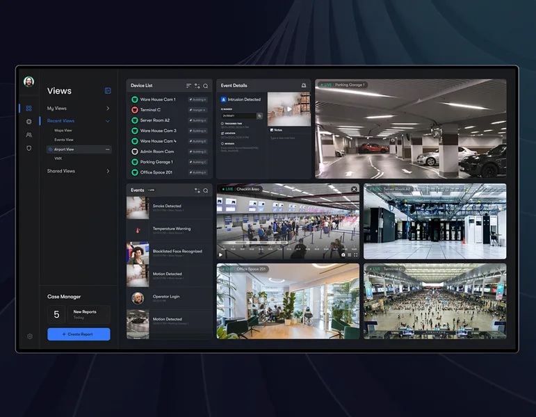
1Стена и лента событий
Взять: Слева список камер, справа стена; ниже лента событий с кадром и подписью «что случилось», цвет только у метки.
15 экранов в 5 группах. Отметьте номера, которые нравятся.

1Взять: Слева список камер, справа стена; ниже лента событий с кадром и подписью «что случилось», цвет только у метки.
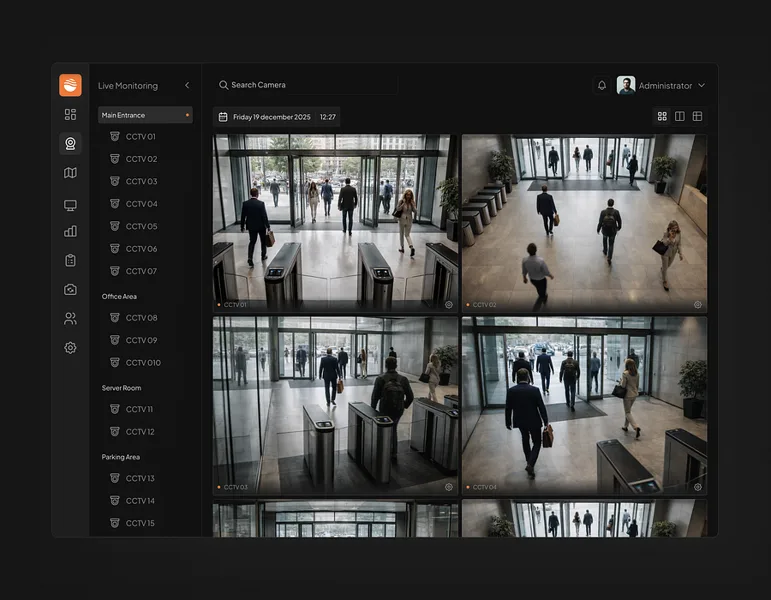
2Взять: Сетка камер, подпись камеры в углу кадра, зоны меню слева; ничего лишнего поверх видео.
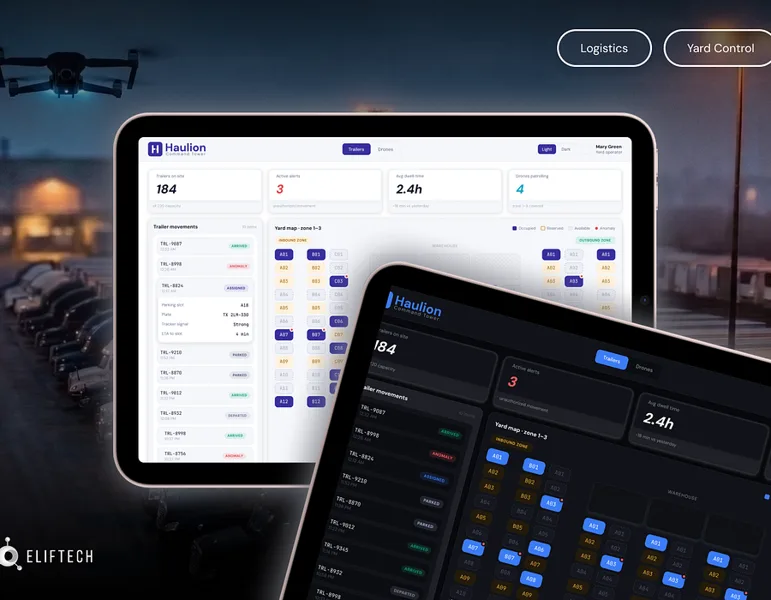
3Взять: Крупные числа сверху (на площадке, тревоги, средний простой), ниже список машин с цветным статусом; одна раскладка в светлой и тёмной теме.
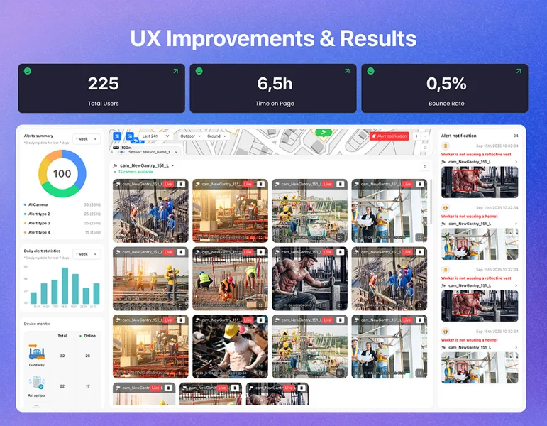
4Взять: Плитки с числами, под ними стена камер со значком тревоги на кадре и список оповещений справа.
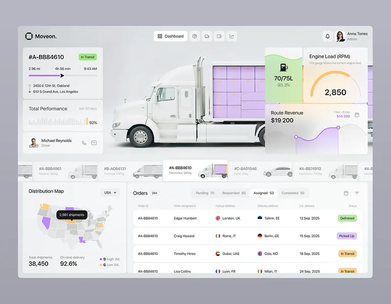
5Взять: Карточка текущего рейса сверху, ниже таблица заказов с цветными таблетками статуса.
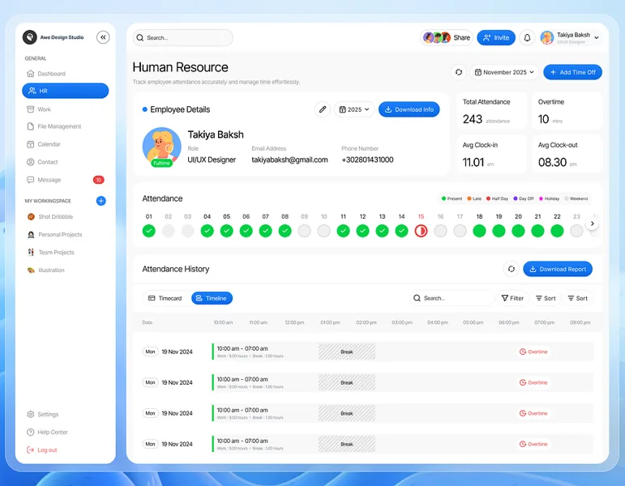
6Взять: Ряд дней точками (был, опоздал, нет) и под ним строки смен полосами по часам; взять для «рейсов по дням».
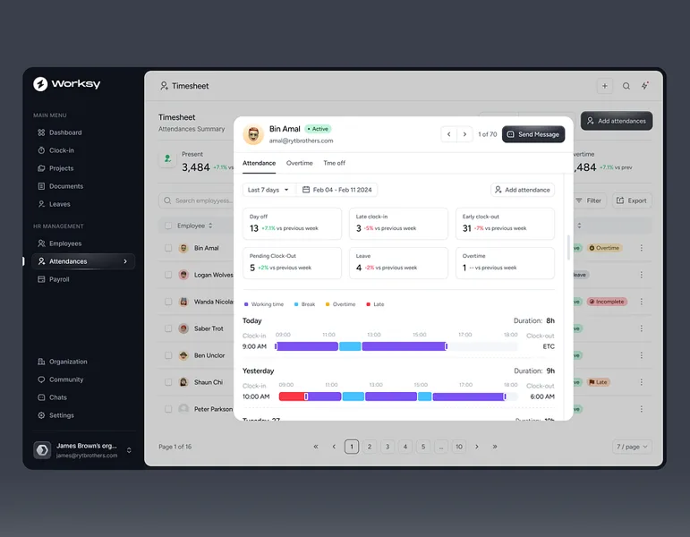
7Взять: Строка на день с цветной полосой «от и до»; взять для простоя и рейсов за день.
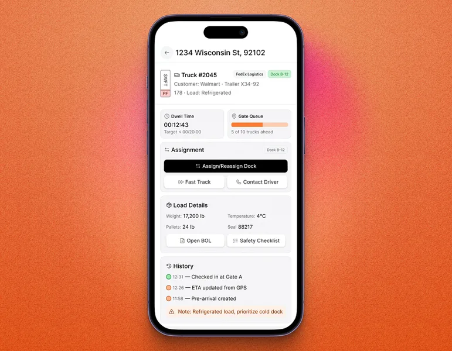
8Взять: Одна машина — одна карточка: номер, таймер простоя, ворота и одна главная кнопка.
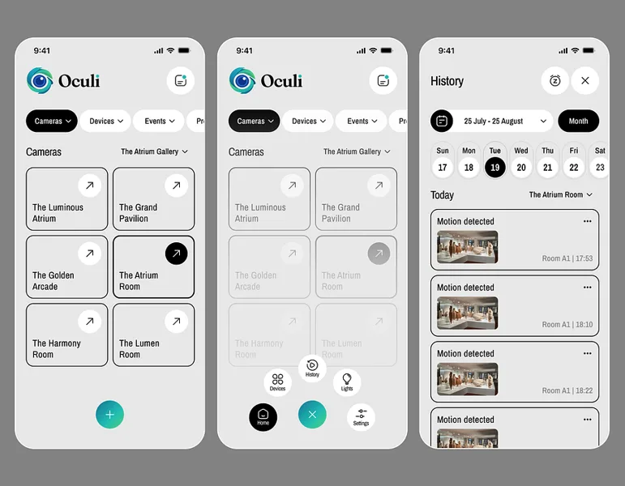
9Взять: Вкладки «камеры / события»; события карточками «движение» с кадром и временем.
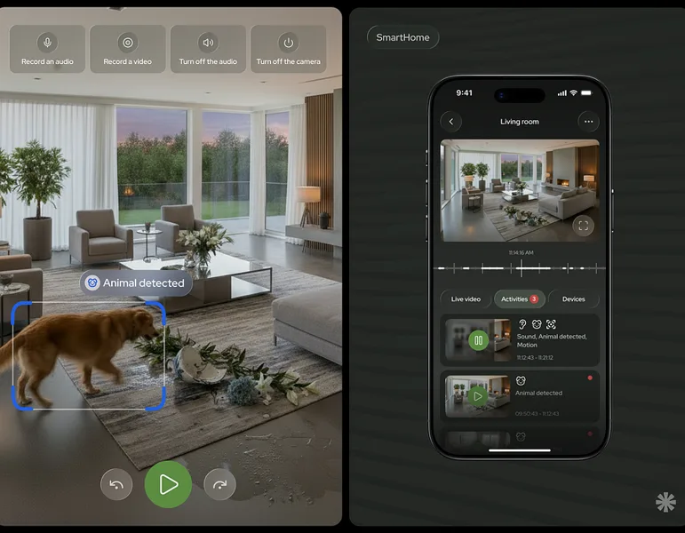
10Взять: Живой кадр, полоса времени под ним, вкладки «Видео · События · Устройства» со счётчиком.
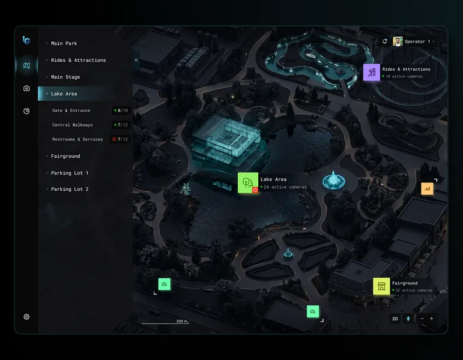
11Взять: План сверху, камеры маркерами с числом активных, слева дерево зон.
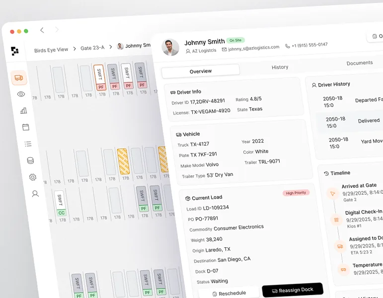
12Взять: Вид сверху на места и полосы; выбранная машина раскрывается карточкой с историей: приехала, ворота, ожидание.
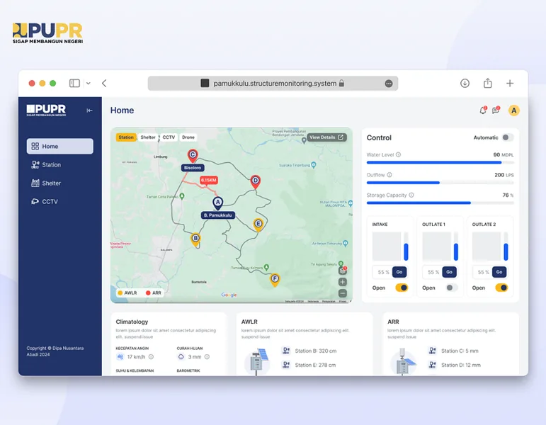
13Взять: Карта с метками рядом с панелью показателей; светлая и спокойная.
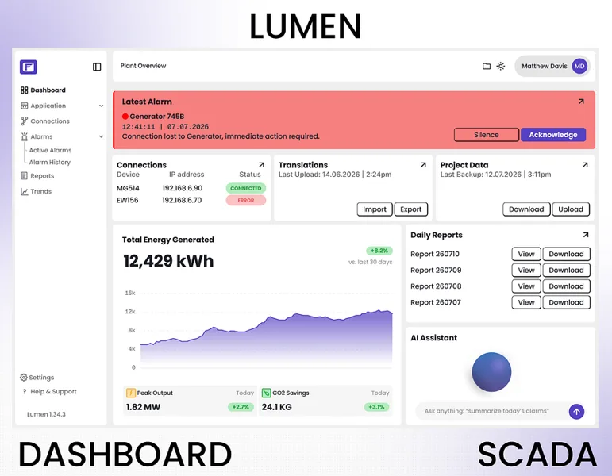
14Взять: Экран спокойный, одна красная полоса сверху «последняя тревога» с кнопками «Заглушить · Принять».
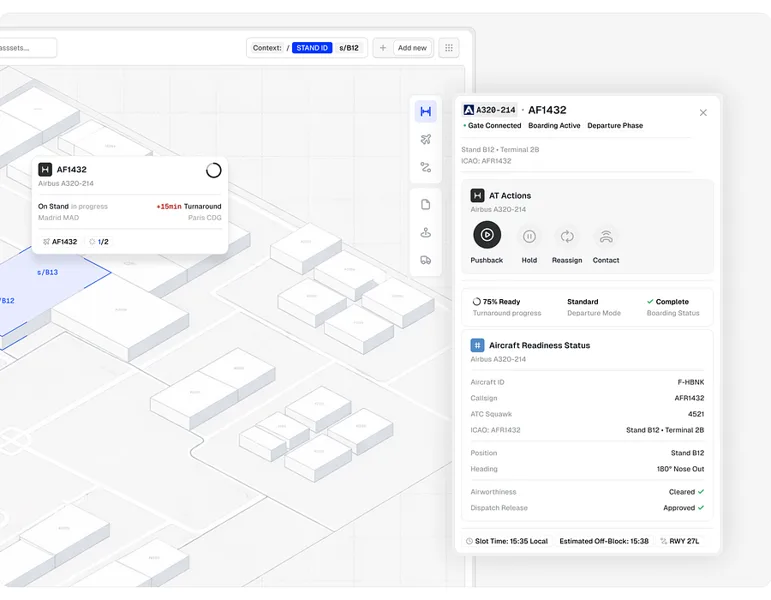
15Взять: Схема стоянок и карточка рейса: фаза, «ждёт / подтверждено», оставшееся время; взять для карточки машины на въезде.